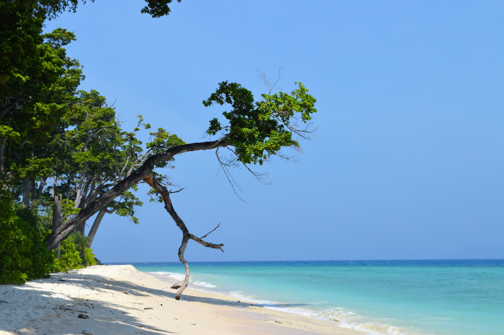
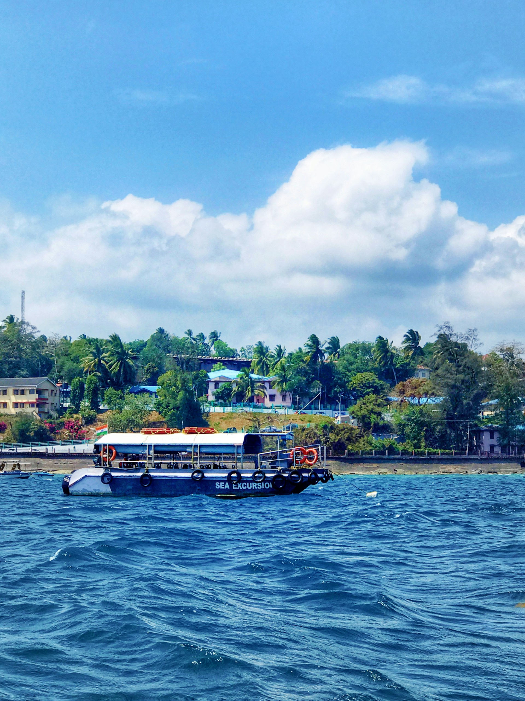
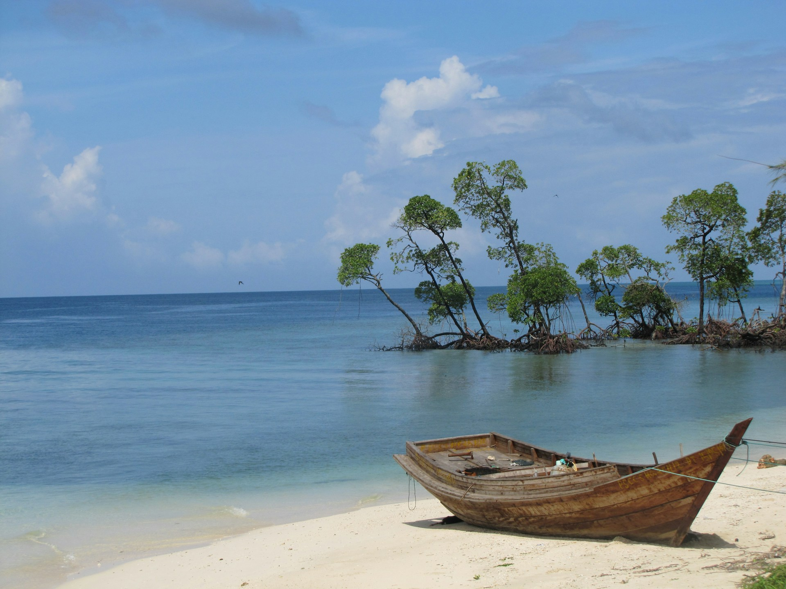
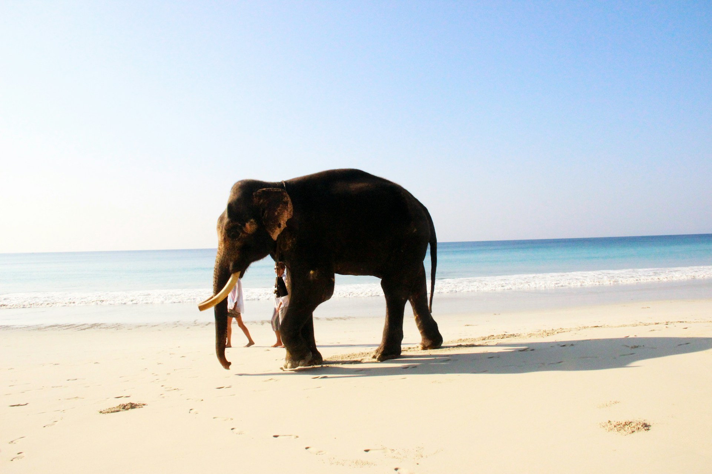

The Andaman Islands, located in the Bay of Bengal, are known for their pristine beaches, crystal-clear waters,
and rich marine life. A paradise for nature lovers and adventure enthusiasts, Andaman is perfect for activities like
snorkeling, scuba diving, and beach lounging.
The islands are also home to several indigenous tribes and offer a unique blend of culture and natural beauty. Havelock Island, Neil Island, and Ross Island are some of the popular tourist spots, offering sandy beaches, water sports, and lush tropical forests.
The Andaman Islands are also famous for their historical significance, with the Cellular Jail in Port Blair being an iconic site that holds the memories of India's freedom struggle.
The islands are also home to several indigenous tribes and offer a unique blend of culture and natural beauty. Havelock Island, Neil Island, and Ross Island are some of the popular tourist spots, offering sandy beaches, water sports, and lush tropical forests.
The Andaman Islands are also famous for their historical significance, with the Cellular Jail in Port Blair being an iconic site that holds the memories of India's freedom struggle.





Tips for Visit
- Best season: November to April for water sports and sightseeing.
- Carry mosquito repellent as the islands have a tropical climate.
- Book diving and snorkeling tours in advance to avoid last-minute disappointments.
- Respect the local tribes and avoid venturing into restricted areas.
- Wear light, breathable clothing due to the humid weather.

Ramesh Kumar
15 yrs guiding in Agra
⭐⭐⭐⭐⭐

mohmd ali
Mughal history specialist
⭐⭐⭐⭐☆

Imran Ali
Speaks English, Hindi, French
⭐⭐⭐⭐⭐

Priya Sharma
Cultural & heritage tours
⭐⭐⭐⭐
Local Services
| NAME | CONTACT |
|---|---|
| Tourist Helpdesk | +91-3192-232585 |
| Local Taxi | +91-9876543210 |
| Hotel Info | +91-3192-232565 |
| Emergency | 100 / 108 |
Nearby Places
| NAME | Location | Highlights |
|---|---|---|
| Havelock Island | 30 km | Beaches and diving |
| Neil Island | 20 km | Quiet beaches |
| Cellular Jail | Port Blair | Historical monument |
| Ross Island | 5 km | Colonial ruins |